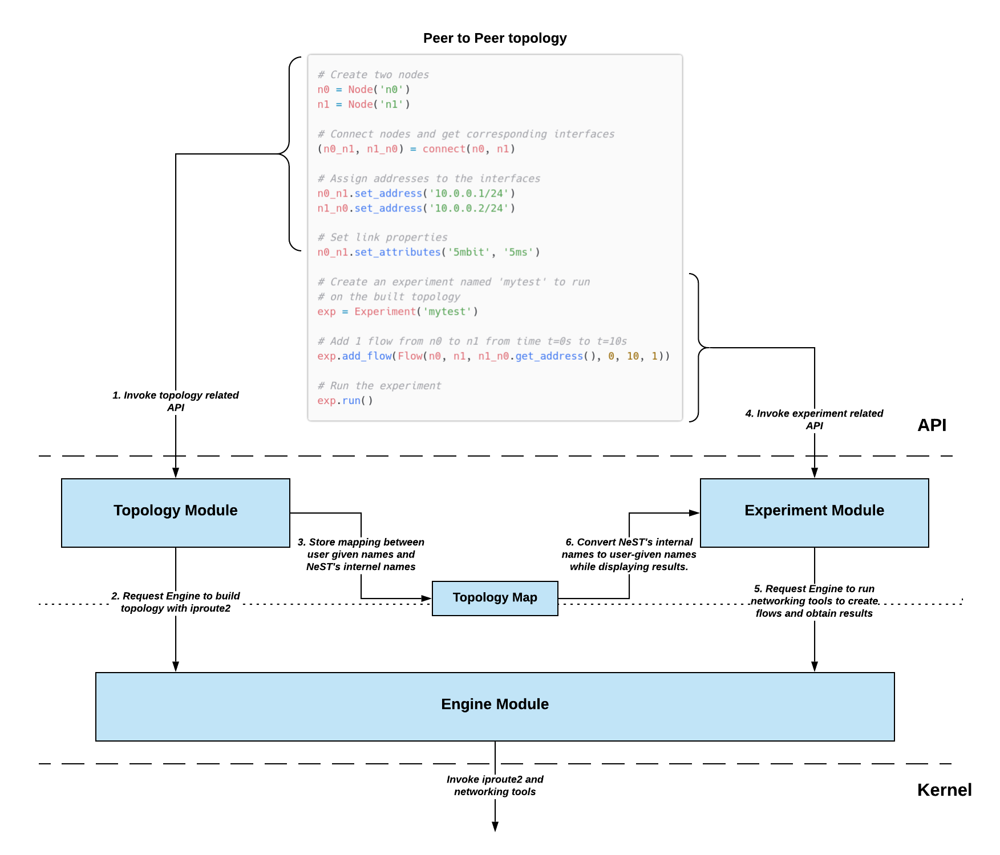

Architecture¶
This section will introduce to you the core modules of NeST. These were one of the first modules to be added to NeST, and any new modules that are added and might be added in the future mostly extend these core modules. These modules are:
1. Topology Module
2. Experiment Module
3. Engine Module
Additionally, we will also look into a small but important module called
Topology Map.
The below image shows the interaction among these modules:
Topology Module¶
The topology module consists of APIs for creation, management and deletion of
network namespace, network interfaces, addresses and routes. Network namespaces
isolate network resources. We use this isolation to emulate Nodes in the
network.
In NeST, a node is an abstraction for a computing device that can communicate
with other nodes. Nodes can communicate with other nodes using Interfaces.
An interfaces can be assigned network addresses (i.e., IPv4 or IPv6 addresses).
Using these addresses, two interfaces directly connected with one another can
communicate. If not, then we can add routes to interfaces to ensure that
non-adjacent interfaces can communicate. You can refer to Tutorial
section for more details on these APIs.
Experiment Module¶
The experiment module consists of APIs for running network experiments. A
network experiment consists of APIs for generating network traffic. This traffic
is run on topologies built using toplogy module, in the aim of understanding
some networking phenomena (for eg., to understand TCP BBR’s behaviour of probing
RTT every 10s). Network traffic is generated by using network utilities such as
netperf, iperf3.
Additionally, experiment module has Parsers and Plotters. Parsers
run iproute2 tools like ss (socket stats), tc (traffic control) at
regular intervals to obtain crucial network data (like TCP CWND, Qdisc queue
lenght, etc). This data is obtained by parsing the output of ss and tc.
Plotters use these parsed result to produce plots.
It is expected that this data visualized as plot would be more useful for the user. But the less readable parsed result is also available to the user in JSON format, in case they are interested to visualize data in their own way.
Engine Module¶
From the above two modules and the Introduction to Developer docs section, it is quite clear that NeST is a wrapper around network namespaces and network utilities. This implies the NeST inherently has lot of dependencies over networking tools. To keep track of all these depenedencies, and to make it easier to add new dependencies, we use the engine module.
Put simply, engine module consists of python APIs that internally call the networking tools. The topology and experiment module use these APIs. For example, below is the command to create a network namespace in linux:
$ ip netns add node
In engine, we have a function called create_ns, which internally calls the
above command. The create_ns API is used by topology module, in the
constructor of the Node class.
Note that the engine module APIs are considered to be “low-level”, which means it is not intended to be used by users. They are primarily used by “high-level” modules, like topology and experiment. The APIs exposed by topology and experiment are used by users.
Topology Map¶
Topology map assigns unique ids to the topology created by the user. What this ensures is that no to networking entities (eg. network namespaces, network interfaces) will have the same id. This allows the user to build multiple copies of the same topology and run different experiments on them.